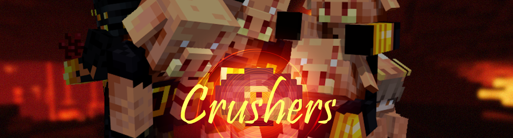
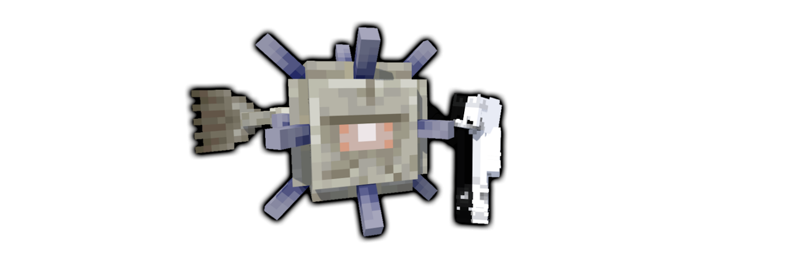

Chapter-01
プロジェクトの発足から11回のフェーズを経て、擬態科学の研究が落ち着きはじめていた頃のお話。
スティーブは自身がクラフトテーブルによって生み出した緑ガラスに、自分だけが扱える特殊な細工を施した。
「その緑ガラスの性質を全てのブロックに適応させる」と脅し、擬態科学の人間に自身の状態維持能力を高めさせた。
その状態維持能力をスティーブは違う言葉で表現する。「永続する変化」と。
ヘロブラインが過去にすべてのイミテイターからエアストレイフの発動プロファイルを奪い去った事件から半年ほど経過したこの隙を狙った犯行である。
罠師のように礼節持ったヒューマンもいるが、やはりこの2人には警戒しないといけない。いつかすべてのキャラコンを盗まれてしまうから。

姉妹鯖であるImitatorsMCのプロジェクト閉鎖を受けて、開発元は二者の共存を目指して能力の移植に取り組んできました。
その一つとしてTwinsの自動歩行はImitatorsMCのIllusionを受け継いだものとなっています。
今回はその第二種類目として、Rushを受け継いだサプライウェポンの実装です。
Rushの扱うピグリンブルートたちはもともとネザーで共生していたHazeの力を分けてもらい、その力でサプライウェポンを生み出しました。
このサプライには自身の能力を高めるディスクが用いられており、手にしたイミテイターが使用すると同時にネザーから現世のアリーナへピグリンブルートが送り込まれます。
Hazeの持つ「技潰しの能力」を得た強化個体のピグリンブルート4体が対象目がけて突進していきます。
各種イミテイターの調整
Steve / スティーブ
- 緑ガラスに対する壁キックの腹減りを消しました。
- 破壊で緑ガラスを回収できるようにしました。
- クールタイムを4秒減少させました。
- 効果時間を9秒増加させました。
Vanisher / ヴァニッシャー
- 透明化の時間を1秒増加させました。
Twins / ツインズ

- 自動歩行中は弓を構えないように変更しました。
- ダイヤブロックのキャラコンを模倣するように変更しました。
Xray / エクスレイ

- ブロック透明化が損なわれる問題を修正しました。
Chorus / コーラス

- CTを5秒減少させました。
- 効果時間を1秒増加させました。
各種サプライの調整
Meteor / メテオ

- 投擲時に発生させるパーティクルに乗った時に受ける鈍足デバフを、利用者が喰らわないように変更しました。
Smasher / スマッシャー

- 射撃速度をわずかに上昇させました。
- 強制爆発までの時間を5秒早く変更しました。
- 爆破範囲を半分にしました。
- CTを3秒減少させました。
変更要素
無駄なワールド生成を削除
延長戦のないモードでも常に延長戦ワールドを読み込んでいたことが負荷の要因であったと推測したため削除しました。
ワールド生成ラグの軽減
エントリーワールド含めすべてのワールドを同時に生成していたことが負荷の要因であったと推測したため修正しました。
エントリー処理の調整
Clerkを殴った時に周りのユーザーに干渉しないようにサイズを少し大きくしたほか、吹っ飛ばすようにしました。
夜マップを削除
スワッパーなど、暗いスキンが見えづらいため削除して朝と夕方の時間帯に変更しました。
人数分散処理
10人以上参加者が出た場合、参加者の半数をマッチング人数にする設定を導入しました。
ギャンブルの最適化
賭けた人もカルマの奪取を行えるように変更しました。
ランダム設定の修正
イミテイターウェポンのランダム設定がエントリールームでうまく適応されない問題を修正しました。